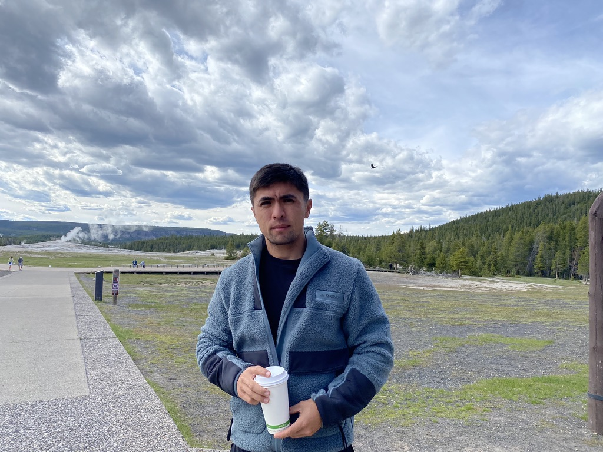

Alikhan Yergaliyev


Summary
Highly motivated and adaptable Full Stack Developer with three years of professional experience and a strong background in auditing, backed by five years of experience and an LLM degree. Currently pursuing a Master of Science in Information Technology (MSIT) to further enhance technical expertise. Proficient in a wide range of programming languages and web development technologies, including Python, HTML, SQL, CSS, and JavaScript. Adept at collaborating with cross-functional teams to deliver innovative solutions that meet business objectives. Known for quickly grasping new concepts and applying them effectively in a dynamic development environment. Committed to continuous learning and staying at the forefront of technology trends.
Key Skills
- Programming Languages: Python, JavaScript
- Web Development: HTML, CSS, SQL
- Full Stack Development
- Agile Development
- Problem-Solving and Analytical Skills
- Cross-Functional Collaboration
- Adaptability and Quick Learning
- Attention to Detail
Professional Experience
Database Manager | Ace Trucking LLC | Glendale, CA] | 2021-2022
- Oversaw the management and maintenance of the company's databases, ensuring data accuracy, security, and availability.
- Designed and implemented database structures and schemas to support various business operations and reporting needs.
- Performed routine database maintenance tasks, including backups, updates, and optimizations, to ensure optimal performance.
- Collaborated with cross-functional teams to gather database requirements and provide technical guidance on data-related projects.
- Developed and enforced data security policies and access controls, safeguarding sensitive information.
- Conducted performance tuning and query optimization to enhance database efficiency.
- Created and maintained documentation on database structures, configurations, and best practices for the organization.
- Acted as a key point of contact for database-related issues and provided timely support to resolve technical challenges.
Full Stack Developer | Zapis.KZ LLC | Almaty, KZ | 2020–2022
- Collaborated with a diverse team to design, develop, and maintain web applications that improved user experiences and met business needs.
- Utilized Python, JavaScript, HTML, CSS, and SQL to create dynamic and responsive web solutions.
- Implemented agile methodologies to ensure project milestones were met on time and within budget.
- Conducted code reviews and provided constructive feedback to team members, contributing to code quality and best practices.
- Developed and maintained efficient databases, optimizing query performance and ensuring data integrity.
- Played a key role in troubleshooting and resolving technical issues to minimize disruptions and enhance system reliability.
- Contributed to the integration of third-party APIs to expand the functionality of web applications.
- Actively participated in continuous learning and professional development to stay current with industry trends and emerging technologies.
Auditor | Ministry of Finance of Republic of Kazakhstan | Nur-Sultan, KZ | 2015 - 2020
- - Led audit engagements, managing teams and ensuring compliance with auditing standards and regulations.
- - Conducted detailed financial analysis, identified risks, and proposed recommendations to enhance clients' financial performance.
- - Leveraged strong analytical skills to uncover anomalies and discrepancies, providing valuable insights to clients.
- - Demonstrated strong communication skills by presenting audit findings and recommendations to clients and senior management.
- - Managed complex projects, adhering to strict deadlines, and effectively coordinating resources and timelines.
- - Maintained meticulous documentation and records to support audit work and satisfy regulatory requirements.
Education
Master of Science in Information Technology | American National University | 2025
Master of Laws | University of Southern California | 2020
Certifications
UCLA Extension | Los Angeles, California | 2020 - 2022
- Data Science
- Applications Programming
Professional Memberships
Currently in the process of preparing to sit for the Oregon Bar Examination.
Languages
Fluent in English, Kazakh, Turkish, Arabic and Russian
Contact me